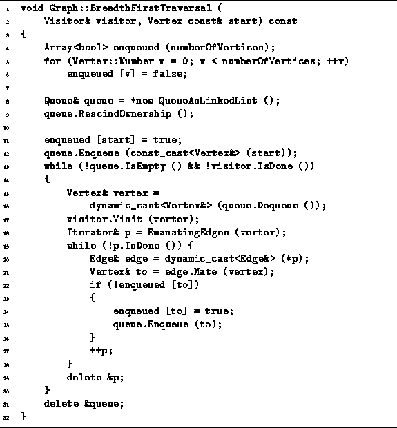

Data Structures and Algorithms
with Object-Oriented Design Patterns in C++
Data Structures and Algorithms
with Object-Oriented Design Patterns in C++
Program  gives the code for the BreadthFirstTraversal
routine of the Graph class.
This routine takes a reference to a Visitor instance
and a reference to a Vertex instance.
The Visit function of the visitor
is called once for each vertex in the graph
and the vertices are visited in breadth-first traversal order
starting from the specified vertex.
gives the code for the BreadthFirstTraversal
routine of the Graph class.
This routine takes a reference to a Visitor instance
and a reference to a Vertex instance.
The Visit function of the visitor
is called once for each vertex in the graph
and the vertices are visited in breadth-first traversal order
starting from the specified vertex.

Program: Graph Class BreadthFirstTraversal Member Function Definition
An Boolean-valued array, enqueued, is used to keep track of the vertices that have been put into the queue. The elements of the array are all initialized to false (lines 4-6).
Next, a new queue instance is allocated dynamically (line 8). The queue is used to contain only vertices. Since the vertices are owned by the graph, they cannot also be owned by the queue. Therefore, the RescindOwnership function of the queue is called (line 9). This way, when the queue destructor is called, it will not attempt to delete any of the its contained objects.
The second argument of the BreadthOrderTraversal function is a reference to a const vertex. Therefore, the routine must not modify the start vertex. However, we need to push the vertex onto the queue and since the Enqueue function takes a non-const Object reference, it is necessary to cast away the constness using a constcast (line 12). This is not an unsafe cast in this context, because the queue is a local variable of the BreadthOrderTraversal routine and because the routine does not modify anything which it later dequeues from the queue.
The main loop of the BreadthFirstTraversal routine comprises lines 13-30. This loop continues as long as there is a vertex in the queue and the visitor is willing to do more work (line 13). In each iteration exactly one vertex is dequeued and visited (lines 15-17). After a vertex is visited, all the successors of that node are examined (lines 18-21). Every successor of the node that has not yet been enqueued is put into the queue and the fact that it has been enqueued is recored in the array enqueued (lines 22-26).
 Copyright © 1997 by Bruno R. Preiss, P.Eng. All rights reserved.
Copyright © 1997 by Bruno R. Preiss, P.Eng. All rights reserved.